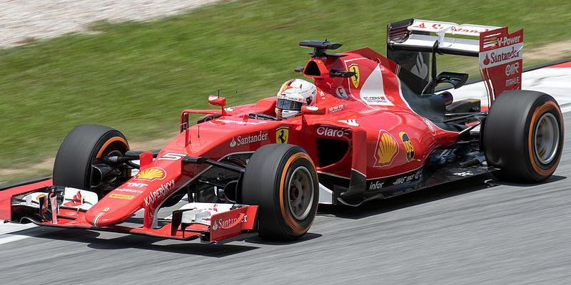

Sebastian Vettel's Stint with Ferrari in Formula 1: A Tale of High Hopes and Missed Opportunities
Published Date:
Author: John Doe

In the realm of Formula 1, few names evoke as much passion and expectation as Ferrari. It's a team steeped in history, glory,
and a relentless pursuit of excellence. When Sebastian Vettel, a four-time World Champion,
joined the Scuderia Ferrari in 2015, it seemed like a match made in racing heaven. However,
what followed was a journey marked by moments of brilliance intertwined with frustration and unfulfilled dreams.
Vettel's arrival at Ferrari was greeted with immense optimism. After all, here was a driver who had conquered the Formula 1
world with Red Bull Racing, displaying a blend of raw speed, tactical acumen, and unwavering determination.
Paired with the iconic red cars of Ferrari, it was a partnership that promised to reignite the team's championship ambitions.
The early years seemed promising. Vettel quickly endeared himself to the Tifosi, Ferrari's passionate fan base, with
victories in his debut season, including an emotional win at the historic home race in Monza.
The Scuderia appeared to be on an upward trajectory, challenging Mercedes' dominance and revitalizing the championship battle.
However, as the seasons progressed, cracks began to appear in the Ferrari-Vettel alliance.
Technical setbacks, strategic errors, and fierce competition eroded their championship hopes.
Despite flashes of brilliance,
including memorable wins in Singapore, Hungary, and Monaco, elusive consistency and the formidable might of
Mercedes often left them trailing in the title race.
The nadir came in 2019, a season marred by missed opportunities and internal struggles. Ferrari's car lacked
the pace to challenge Mercedes consistently, while Vettel faced criticism for high-profile mistakes under pressure.
Controversies, such as team orders and on-track collisions, further tarnished their campaign, casting doubt on
the viability of their partnership.
Amidst mounting pressure, the announcement of Vettel's departure from Ferrari at the end of the 2020 season signaled
the end of an era. Despite mutual respect and admiration, both parties acknowledged the need for a fresh start.
Vettel's tenure with Ferrari, though falling short of the coveted championship glory, was not without its highlights
and unforgettable moments.
As Sebastian Vettel embarked on a new chapter with Aston Martin (formerly Racing Point), Ferrari set its sights on rebuilding and reclaiming its position at the pinnacle of Formula 1.
The legacy of Vettel's time with Ferrari serves as a reminder of the complex blend of talent, teamwork,
and tenacity required to succeed in the fiercely competitive world of motorsport.
In the annals of Formula 1 history, the saga of Sebastian Vettel in Ferrari's scarlet ranks will be remembered as a
captivating chapter filled with triumphs, setbacks, and the enduring pursuit of excellence in the pursuit of speed.